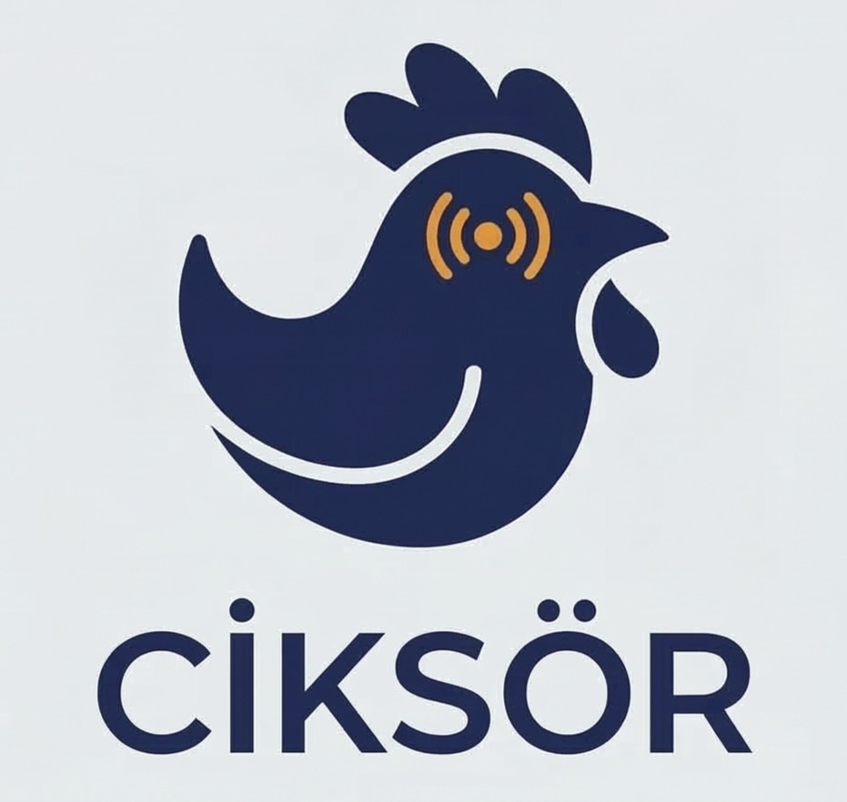

TÜME CİKSÖR
Tavuklarda hastalıkların henüz insan kulağıyla duyulamayan erken safhalarındaki ses değişimlerini analiz eden yapay zeka tabanlı bir akustik takip sistemidir. Projemiz; sürekli ve temassız izleme sayesinde hastalıkları klinik öncesi dönemde tespit ederek, hayvan refahını artırmayı ve işletmelerin verim kayıpları ile tedavi masraflarından doğan ekonomik zararlarını minimize etmeyi amaçlamaktadır.
MEMS mikrofon dizilimi ile ortam gürültüsünden arındırılmış yüksek frekanslı ses kayıtları alınır. Spektrogram dönüşümü ile frekans anomalileri anlık olarak hesaplanır.
Evrişimli Sinir Ağları (CNN) mimarisi kullanılarak sağlıklı ve solunum güçlüğü çeken tavukların ses modelleri %90+ doğruluk oranı ile sınıflandırılır.